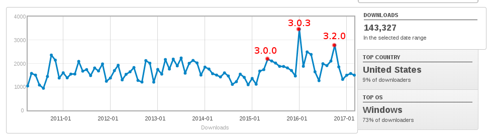

Who am I and why do I dare talk about this
Quick Overview
Now we have docker!
Stable usage with slowly increase

and that's only from sourceforge
Quick Overview
Mostly developed by europeans
on their work time
Quick Overview

where we try to catch up
Quick Overview
Stakeholders Meeting
where we try to align views and define a rough roadmap
Recent Developments
WFS Filters based on WFS indexing with SOLR

Search engines: nojs, sitemap, schema.org,...
Several Harvesters fixes!!
CORS support and improved proxy
Events and listeners
Custom Metadata UUID
"Just created" flag
CRFS security token + API
XSS security improvements
New languages!
Current Developments
Focus on 3.2.x (and 3.4.x)
Improved workflow
Future Developments
Improve Scalability (Docker, SOLR)
SOLR support/Elastic Search
Better overriding of translations
Dashboard
Anything you want to contribute with :)